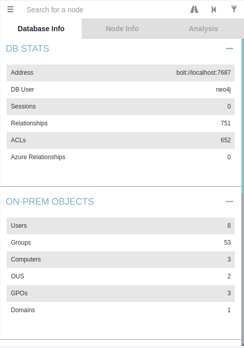

As we have transfered our file over now we have to do some bloodhound reveiwing.
But if we go to the queries we can see that they have some pre-built queries for us.
If we look at the Punisher.marvel that local administrator at Marvel.local has a session
here well i was logged in as Administrator so the sessions here.
What does that make you think of ?_?
-Token Impersonation
-Leverage attacks against this to try to compromise the administrator accounts with Mimi Katz.
Enumeration Process never chances.....................
Once we have an account on a network we're going to enumerate we're going to enumerate before we get an account.
We're gonna try to find access once we get access.
We are going to Re-enumerate we're going to see what information we can learn once we've gathered that account.
Will take about Post Compromise Attacks once we have compromised one account what can we do with that account and how can we leverage that into other compromises and eventually own this whole network here.